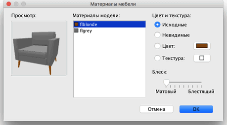

| Редактирование предметов мебели | |||
Вы можете изменить позицию, размер и угол домашней фурнитуры с помощью мышки или меню Мебель >
Изменить.... Когда один предмет или одна группа выделена на плане, Вы можете изменить его размер, подъем или угол, с помощью четырех индикаторов по углам выделенного предмета. 4
|

|
Когда мышка находится над любым из этих индикаторов, она меняет вид, показывая, что вы можете перетащить за этот
угол, для изменения соответствующих свойств предмета. При нажатии кнопки мыши, появляется подсказка, в которой
показываются изменяемые значения. Можно менять свойства непосредственно на плане, при двойном клике на объекте появится панель свойств выделенного объекта. Так же можно изменять выделенный предмет в пункте менюФурнитура > Изменить....
У мебели на плане возможно изменять наименование, угол поворота, местоположение в комнате по осям X,Y, уровень
подъема над полом (ось Z), ширину, глубину, высоту, цвет или текстуру, видимость и зеркально отобразить 3D модель. Когда редактируется один предмет (или выбранные предметы одинаковы), вы можете нажать кнопку Изменить возле надписи Материалы, для изменения цвета или текстуры каждого материала предмета.  Панель редактирования материалов мебели показывает список материалов, которые вы можете редактировать и 3х мерый просмотр цвета и текстуры материала, который вы редактируете. Будте внимательны не всегда материалы написаны так как нужно, например на рисунке сверху написано bone2 вместо матраса или flyellow вместо каркаса кровати. Так же вы можете вращать объект в 3х мерном просмотре мышкой, при необходимости. |

|